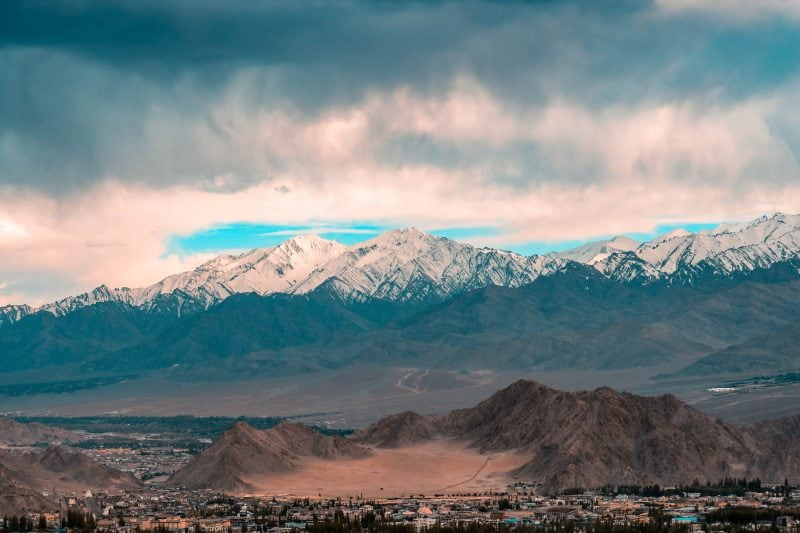
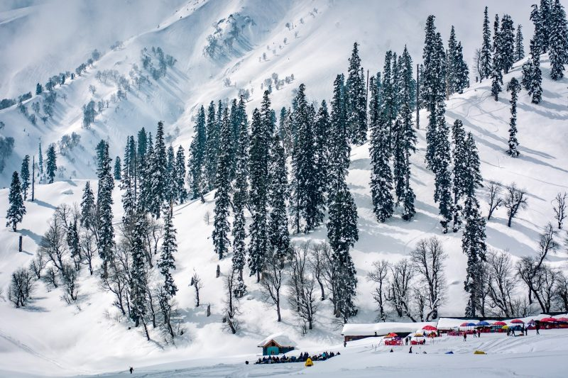
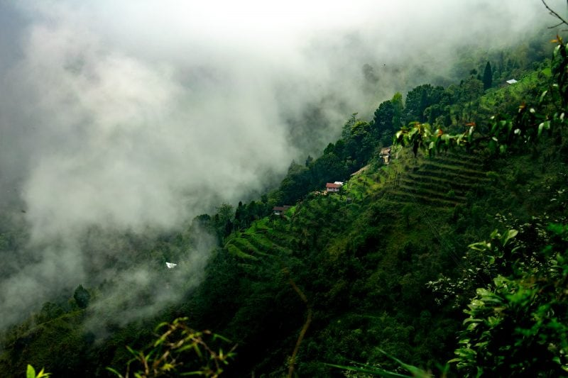

Best Hill Station In India
Kodaikanal
Located: Tamil Nadu
How to reach:
Fly to the nearest airport at Coimbatore from Chennai at drop dead air fares starting at INR 1,063.
About
Embraced by lush and evergreen forests, Kodaikanal is often known as the ‘Gift of the Forests‘. Discovered in and around 1845, it is also touted as the ‘Princess of Hill Stations’ and is compared with other scenic hill stations in the country. Be it stunning waterfalls, ancient caves, guarding rock pillars, striking water bodies or serene forest areas, Kodaikanal never ceases to amaze its visitors with its natural beauty.
Munnar
Located: Kerala
How to reach:
To reach Munnar, fly straight to the nearest airport at Kochi from Bangalore without burning a hole in your pocket at just INR 1,739!
About
When it comes to hill stations, the God’s Own Country also tops the list. Located 1,600m above the sea level, Munnar in Kerala is one of the picturesque hill stations in India. Often called as the ‘Green Capital of India’, it is laced with scenic mountains, rolling hilltops, tea and coffee plantations, and is a true cradle of nature that befits fairy tales and fantasies.
Srinagar
Located: Jammu & Kashmir
How to reach:
Fly to the nearest airport at Srinagar from New Delhi at super low prices starting at INR 1,799! tours
About
Situated gracefully on the banks of the Jhelum River, Srinagar is often referred as the ‘Kashmiri Venice’. One of the most romantic destination in India, the mystical outlook of this place entices the visitors with its charm and beauty. Visit this piece of paradise and witness the mesmerising beauty of the Dal Lake and enjoy ‘shikara’ rides to several gardens within the lake.
Ooty
Located: Tamil Nadu
How to reach
Fly to the nearest airport at Coimbatore from Chennai at drop dead air fares starting at INR 1,063.
About
The scenic beauty of Ooty makes it one of the most celebrated as well as highly visited hill stations in India. Nestled deep within the Nilgiri Hills, this quaint delight is a hub for the honeymooners and nature lovers. It is indeed entitled as one of the best hill stations in the Nilgiri Ranges.
Pahalgam
Located: Jammu & Kashmir
How to reach:
Fly to the nearest airport at Srinagar from New Delhi at super low prices starting at INR 1,799!
About
Be it on a honeymoon tour, vacation with family members or an outing with friends, fun and liveliness never ceases to stop in Pahalgam. It is in this scenic hill station, you can feel and experience all the true colours of the nature at its best.
Top-3 Hill Station In India
-

Leh Ladakh
StoryLine
Counted among the highest hill stations in India, a trip to Leh Ladakh is also one of the most famous. From driving in the world’s highest passes to soaking in the scenic beauty, there are a lot of reasons why Leh Ladakh is counted among the most famous hill stations in India. You can opt for a simple tour package that takes care of your travel and accommodation or you can plan an adventurous bike ride to the destination. Some of the popular places you can check out include Pangong Lake, Royal Leh Palace, Tso Moriri, the Magnetic Hill, Zanskar Valley, and much more.
-

Mussoorie, Uttarakhand
StoryLine
Mussoorie is one of the most-visited hill stations in India, and is famous for being the home of Ruskin Bond. Located at a distance of about 34 kilometres from Dehradun, the hill station offers amazing views of the Himalayas to the north, and of the Doon valley towards the south. Mussoorie has been specially developed for tourism and is full of places to visit and things to do. You could take a cable car ride to Gun Hill, walk along Mall road, or head towards the highest point, Lal Tibba, for some beautiful views of the place.
-

Darjeeling, West Bengal
StoryLine
Darjeeling offers magnificent views of the Kanchenjunga and several other hills. This is one of the hill stations in India that’s famous for its large tea estates. In fact, most tour packages available for Darjeeling include tours of tea plantations as well. Home to several waterfalls, another very famous feature of Darjeeling is its Toy Train which makes for a very memorable ride. Other than that, the popular tourist attractions at the hill station include Observatory Hill, Ghoom Monastery, and Senchal Lake.
Best Hill Station In The World
Cypress Hills
Located: Canada
Ranking:
1
StoryLine
Cypress hills are an isolated range in southeastern Alberta and southwestern Saskatchewan, Canada, extending for 100 miles (160 km). It is a great place to relax, and to discover the outdoors or have an adventuring trip. This international park serves you Accommodation and Dining, Equestria, Fishing / Game, Hiking, Summer Activities, Tours and Programs, Water Activities, Winter Activities.
Ooty
Located:India
Ranking:
2
StoryLine
you can find the Location in the State Tamil Nadu, Ooty is situated at an elevation of 2240 m above sea level. The place is a favorite amongst honeymooners to plan their first trip of life with their partners and is a reservoir of natural beauty. The place is completely packed with tea and coffee gardens along with the most expensive natural lakes and the Nilgiri range in the backdrop.

Manali
Located:India
Ranking:
3
StoryLine
Location showed at a height of 2050 m above sea level, this is the most favorite hills amongst travelers all across the globe. It is situated in Himachal Pradesh, which is also known as an apple state of India. Manali offers a wide range of natural beauty whether we talk about apple orchards, flower- valleys to rolling snow-capped mountains as well as green pastures dotted with flocks of sheep.
Thredbo
Located:Australia
Ranking:
4
StoryLine
Thredbo is famous for its white snow and its longest ski run, Thredbo is a small hill town with 470 permanent residents located at an elevation of 2037 m in New South Wales, Australia. The place most likely seems to be interesting after the snowfall. where people can enjoy multiple snow activities. Apart from snow activities, this place is also famous for trekking, cycling, rock climbing.
Zermatt
Located: Switzerland
Ranking:
6
StoryLine
Zermatt is a small hilly area which is located at an elevation of 1608 m at the foothills on the very highest peak of the Alps. This is famous for its pristine beauty of rolling green stretches, beautiful flower-covered valleys, excellent weather, and its popularity in ski resorts.